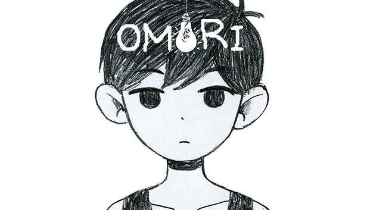

المعنى والنبرة
رد سويتهارت
الأصل الإنجليزي
WELL... I... NEVER!!
تعريب هشام
يا... لها... من وقاحة!!
التعريب الآخر
حسنًا... أنا... لن!!
سبب الترجيح هشام ينقل استنكار الشخصية «يا لها من وقاحة»، بينما تظل الجملة في التعريب الآخر معلّقة عند «أنا... لن».
OMORI
رجّحت المراجعة تعريب هشام في دقّة المعنى، ونقل الدعابة، ووضوح نصوص اللعب. شوف الفرق بين الصياغتين جنبًا إلى جنب مع الأصل الإنجليزي.
شاهد المقارنة
تتضمن الشواهد تفاصيل من القصة.
المعنى والنبرة
WELL... I... NEVER!!
يا... لها... من وقاحة!!
حسنًا... أنا... لن!!
سبب الترجيح هشام ينقل استنكار الشخصية «يا لها من وقاحة»، بينما تظل الجملة في التعريب الآخر معلّقة عند «أنا... لن».
المعنى والنبرة
... uh... heard that the old window got broken when a kid accidentally threw a baseball into it. Probably should have aimed that better...
أنا... آه... سمعت أن النافذة القديمة انكسرت حين رماها صبي بكرة بيسبول بالخطأ. كان عليّ أن أصوّب بدقة أكبر...
أنا... إمم... سمعت أن النافذة القديمة انكسرت حين رمى طفل كرة بيسبول فيها بالخطأ. ربما كان ينبغي له أن يصوّب بشكل أفضل...
سبب الترجيح ضمير المتكلم يكشف أن كيل نفسه كسر النافذة. التعريب الآخر يسند سوء التصويب إلى الصبي الذي يتحدث عنه.
المعنى والنبرة
Umm... Weren't you guys just going to drop me off?
أمم... ألم تكونا ستكتفيان بإيصالي؟
أمم... ألم تكنوا فقط ستقومون بإسقاطي؟
سبب الترجيح المقصود بـ drop me off إيصال بازل إلى وجهته. «إسقاطي» يغيّر الفعل تمامًا.
المعنى والنبرة
SPROUT MOLE MIKE... I order you to marry us immediately!
مايك خلد البراعم... آمرك بأن تعقد زواجنا فورًا!
برعم الخلد مايك... أنا أأمرك بأن تتزوجنا فورًا!
سبب الترجيح سويتهارت تأمر مايك بأن يعقد زواجها. «تتزوجنا» تغيّر دور مايك في المشهد.
المعنى والنبرة
There, there, honey... Cheer up...
اهدئي يا عزيزتي... لا تحزني...
هناك، هناك يا عزيزتي... لا تحزني...
سبب الترجيح عبارة There, there للتهدئة. «اهدئي يا عزيزتي» تؤدي وظيفتها في الحوار.
المعنى والنبرة
your mind, OMORI! I need to set an example for my sometimes-boring little brother!
وسّع آفاقك يا أوموري! عليّ أن أكون قدوة لأخي الصغير الذي يصبح مملًا أحيانًا!
وسّع أفقك يا أوموري! عليّ أن أكون قدوة لأخي الصغير الذي يشعر بالملل أحيانًا.
سبب الترجيح ماري تصف أخاها بأنه مملّ أحيانًا. الآخر يجعله يشعر بالملل.
المعنى والنبرة
Please don't... leave me alone... again...
أرجوك لا... تتركني وحدي... مجددًا...
أرجوك لا... اتركني وحدي... مجددًا...
سبب الترجيح «لا... تتركني» تحفظ طلب بازل. «لا... اتركني» تجعل الشطر الثاني يُقرأ كأمر بالابتعاد.
المعنى والنبرة
whole time I've been here, I've been looking through my PHOTO ALBUM to keep me company...
طوال وجودي هنا، كنت أتصفح ألبوم الصور ليؤنس وحدتي...
طوال الوقت الذي قضيته هنا، كنت أتصفح ألبوم الصور لأبقى بصحبة شيء ما...
سبب الترجيح «ليؤنس وحدتي» يوضح أن ألبوم الصور هو ما يخفف وحدة بازل.
المعنى والنبرة
It's been a bit empty around here lately, so I always worry that the children who are left will start getting lonely...
قلّ عدد الأطفال هنا مؤخرًا، لذا أخشى دائمًا أن يبدأ الباقون بالشعور بالوحدة...
كان المكان هنا فارغاً مؤخراً، لذا أقلق دوماً إن كان الأطفال الغائبون يشعرون بالوحدة أم لا...
سبب الترجيح بالمي قلقة على الأطفال الذين بقوا في المكان. صياغة الآخر تنقل القلق إلى الغائبين.
المعنى والنبرة
I heard they made BERLY head of security! They say she's got a stiff upper lip!
سمعت أنهم عيّنوا بيرلي رئيسة للأمن! يقولون إنها لا تهتز أمام شيء!
سمعت أن بيرلي أصبحت رئيسة الأمن! قالوا أن لديها شفها علوي متصلب!
سبب الترجيح تعبير stiff upper lip يصف رباطة الجأش. «لا تهتز أمام شيء» تنقل الصفة بدل وصف الشفة حرفيًا.
المعنى والنبرة
have forsaken them, yet they still yearn for your care. Their souls know nothing but how to scream for help. Do you take pity on them?
لقد تخليت عنهم، ومع ذلك ما زالوا يتوقون إلى رعايتك. لا تعرف أرواحهم سوى الصراخ طلبًا للنجدة. أتشفق عليهم؟
تخليت أنت عنهم، لكن لا زالوا قلقون ومهتمون بك. أرواحهم لا تعرف شيئاً إلا البكاء للمساعدة. هل تشفق عليهم؟
سبب الترجيح الأصل يقول إنهم يرجون منك أن تعتني بهم. صياغة الآخر تجعلهم هم المهتمين بك.
المعنى والنبرة
A grandfather clock.
ساعة أرضية ذات بندول.
ساعة جدّية.
سبب الترجيح grandfather clock نوع من الساعات الأرضية ذات البندول. «ساعة جدّية» تغيّر مدلول الاسم.
المعنى والنبرة
... It's okay, AUBREY. We've all made mistakes.
't be silly, AUBREY. Of course you do.
اسمعي... لا بأس يا أوبري. كلنا ارتكبنا أخطاء.
لا تقولي هذا يا أوبري. بالطبع تستحقين.
مرحبًا... لا بأس يا أوبري. كلنا ارتكبنا أخطاء.
لا تكن سخيفًا يا أوبري. بالطبع تستحقين.
سبب الترجيح «اسمعي» تناسب لحظة التهدئة، و«لا تقولي» تحافظ على خطاب أوبري بالمؤنث.
المعنى والنبرة
"☐ shuffles up the statue, and looks down at the moving water. He can hear his heartbeat. His ears begin to ring."
"He feels something crawling on his shoulder and his eyes fly open to meet with those of a black spider."
"In an instant, ☐ loses all sense and hurls himself into the lake. Water fills his nose. He exerts his limbs, but the water is stronger."
"☐ shuts his eyes... and waits for the brothers to save him."
"يتسلّق ☐ التمثال بخطوات مترددة، وينظر إلى الماء المتحرّك تحته. يسمع دقات قلبه. ويبدأ الطنين في أذنيه."
"يشعر بشيء يزحف على كتفه، فيفتح عينيه فجأة لتلتقيا بعيني عنكبوت أسود."
"في لحظة، يفقد ☐ صوابه ويلقي بنفسه في البحيرة. يدخل الماء إلى أنفه. يحرّك أطرافه بكل قوّته، لكن الماء أقوى منه."
"يغمض ☐ عينيه... وينتظر أن ينقذه الأخوان."
"عدَّل ☐ التمثال، وبعدها نظر إلى الماء أسفله. يمكنه سماع نبضات قلبه. أذناه بدأت ترن."
"شعر أن شيئ ما يتحرك في كتفيه وفتحت عيناه في أرجل منتمية لعنكبوت أسود."
"في لمحة عين، خسر ☐ توازنه وأحاسيسه ووقع إلى البحيرة. أنف مملوء بالماء. حاول تحريك جسمه للخروج، لكن الماء أقوى."
"غلق ☐ عيناه... وانتظر أصدقاؤة لإنقاذه."
سبب الترجيح هشام يحافظ على تسلّق التمثال، ونظرة العنكبوت، وإلقاء الشخصية نفسها في البحيرة، وانتظار إنقاذ الأخوين.
المعنى والنبرة
you know? This bakery belongs to MIKHAEL's family. I guess you can't really tell, because he wears that horrible yellow wig all the time...
هل تعلم؟ هذا المخبز ملك لعائلة ميخائيل. أظن أن الشبه لا يظهر، لأنه يرتدي ذلك الشعر المستعار الأصفر الفظيع طوال الوقت...
هل تعلم أن هذه العائلة تنتمي لميكال؟ ربما لا ترى ذلك حقاً، لأنه يرتدي تلك الباروكة طوال الوقت...
سبب الترجيح «هذا المخبز ملك لعائلة ميخائيل» تحافظ على معلومة المخبز وصاحبه.
المعنى والنبرة
THE RECYCLEPATH: Begone, non-recycler!
THE RECYCLEPATH: Please grant me the power to recycle thy enemies!
مختلّ التدوير: اغرب عن هنا، يا من لا تعيد التدوير!
مختلّ التدوير: أرجوك، أعطيني القوة لأعيد تدوير أعدائك!
مُتبِع إعادة التدوير: \ ارحل أيها غير القابل لإعادة التدوير!
مُتبِع إعادة التدوير: \ امنحيني قوة إعادة تدوير أعدائي!
سبب الترجيح «يا من لا تعيد التدوير» تصف سلوك المخاطَب، و«أعدائك» تحفظ جهة الخطاب في طلب القوة.
النكتة والتورية
Ah, that's PAPA CHIP'S CHIP-OFF-THE-OLD-BLOCK COOKBOOK! I see you have good taste!
آه، هذا كتاب بابا تشيب للطبخ: هذا البسكويت من ذاك العجين! أرى أن ذوقك رفيع!
أه، هذا "كتاب الطهي هذا الشبل من ذاك الأسد" للأب الرقاقة!! أرى أن لديك ذوق رائع!
سبب الترجيح «هذا البسكويت من ذاك العجين» تربط معنى المثل باسم كتاب الطبخ.
النكتة والتورية
HERO is, fins down, the best worker I've ever hired in my life.
هيرو، وأراهن على ذلك بزعانفي، أفضل موظف وظّفته في حياتي.
هيرو، بلا أدنى شك، أفضل موظف وظفته في حياتي.
سبب الترجيح «وأراهن على ذلك بزعانفي» تعيد تورية fins down في كلام القرش.
النكتة والتورية
I'm a sssssssnake, but I'm not toxic! On the contrary, I'm actually quite friendly!
أنا أفعى، لكنني لسسسست سامًّا! بل على العكس، أنا ودود جدًا!
أنا ثعبان سسسسام، لكنني لست سامًا! بل على العكس، أنا ودود جدًا!
سبب الترجيح نقل هشام الأزيز إلى «لسسسست» وحافظ على كون الأفعى غير سامة. الآخر أضاف «سسسسام» فناقض الجملة التالية.
النكتة والتورية
are so cute! Now that there's less SQUIZZARDS on the farm, they'll have more room to moo-ve around, hehe.
أبقار البحر لطيفة جدًا! الآن وقد قلّت السكويزاردات في المزرعة، صار لديها متّسع لتتموّوّوشّى، ههه.
أبقار البحر لطيفة جدًا! والآن بعد أن قلّ عدد السكوِزارد في المزرعة، صار لديها متسع أكبر للموو-حركة، ههه.
سبب الترجيح «تتموّوّوشّى» تدخل خوار البقرة في الفعل العربي، كما يفعل الأصل في moo-ve.
النكتة والتورية
Thabks...
شكزًا...
شكرًا...
سبب الترجيح «شكزًا» تحافظ على خطأ النطق في Thabks. «شكرًا» تصححه فتختفي سمة الشخصية هنا.
النكتة والتورية
"What do you call cheese that isn't yours?"
"Nacho cheese."
"لماذا لا يدافع الجبن عن نفسه؟"
"لأنه جبان!"
"ماذا تسمي البطاطس التي ليست ملكك؟"
"بطاطس مسلوقة."
سبب الترجيح هشام يعوّض جناس Nacho cheese بنكتة «الجبن / جبان» ليظل الجواب مرتبطًا بالسؤال.
النكتة والتورية
I don't know what I've been told... SWEETHEART's love's as good as gold!
لا أدري ما الذي قد قيل... حب سويتهارت ذهب أصيل!
لا أدري ماذا أخبروني به... حُب الغالية هي محبة كالذهب!
سبب الترجيح قافية «قيل / أصيل» تؤدي وظيفة القافية الإنجليزية told / gold.
النكتة والتورية
Oragnes. Oranges but yellow.
برتاقل. برتقال، لكنه أصفر.
برتقال... برتقال لكنه أصفر.
سبب الترجيح «برتاقل» تحفظ تبديل الحرفين المقصود في Oragnes، ثم يشرح السطر ما المقصود.
النكتة والتورية
We are RECYCULTISTS, followers of THE HOLY BIN!
نحن عبّاد التدوير، أتباع الحاوية المقدسة!
نحن أتباع إعادة التدوير، أتباع سلة المهملات المقدسة!
سبب الترجيح «عبّاد التدوير» تحافظ على مزحة خلط التدوير باسم جماعة تعبّدية.
النكتة والتورية
Haha! We got you good, didn't we!?
هاها! أخفناكم حقًا، أليس كذلك؟!
هاها! أمسكنا بك جيدًا، أليس كذلك!؟
سبب الترجيح «أخفناكم» تربط we got you بمقلب التخويف الذي سبق الجملة.
النكتة والتورية
, look! This camera's taking live footage of us. Say cheese!
انظروا! هذه الكاميرا تصوّرنا مباشرة. ابتسموا!
انظروا! هذه الكاميرا تصوّرنا مباشرة. قولوا: جبنة!
سبب الترجيح «ابتسموا» تؤدي طلب المصوّر في Say cheese، وهو المقصود في المشهد.
النكتة والتورية
Because... I'm... sniff... Looking for my long-lost twin brother... ORAGNE JOE...
لأنني... أنا... شهقة... أبحث عن أخي التوأم الذي فقدته منذ زمن بعيد... جو البرتاقل...
لأنني... أنا... شم... أبحث عن أخي التوأم المفقود منذ زمن... أوراغني جو...
سبب الترجيح «البرتقال / البرتاقل» تعيدان قلب الحرفين في اسمي التوأمين، ORANGE وORAGNE.
النكتة والتورية
Glad I got your attention! Now... word around here is that CLAMS will soon be obsolete and replaced by a new and better currency called... CLEMS!
يسرّني أنني لفتّ انتباهكم! والآن... يُقال هنا إن المحارات ستصبح قريبًا عملة قديمة، وستحلّ محلّها عملة جديدة وأفضل تُدعى... مَخارات!
سعيد لأنني حظيت باهتمامكم! والآن... يقول الناس هنا إن العملات الصدفية ستصبح قريبًا بالية وسيستبدل بها نقد جديد وأفضل يُدعى... كليمز!
سبب الترجيح «المحارات / مَخارات» تحفظ التشابه اللفظي بين العملة الأصلية والمزيّفة الذي تقوم عليه الخدعة.
نصوص اللعب
A lightbulb hangs from the ceiling, wherever it is. Look into the lightbulb?
يتدلّى مصباح من السقف، أينما كان. أتريد النظر داخل المصباح؟
يتدلى مصباح من السقف، أينما كان
سبب الترجيح هشام يحافظ على السؤال الذي يسبق اختيار النظر داخل المصباح. في الآخر بقي الوصف فقط.
نصوص اللعب
You now have the LETTER CHECKLIST and MAP.
حصلت على قائمة الحروف والخريطة.
الآن لديك قائمة الرسائل والخريطة.
سبب الترجيح LETTER CHECKLIST قائمة للحروف التي يجمعها اللاعب. «قائمة الرسائل» تسمّي شيئًا مختلفًا.
نصوص اللعب
Hurry, OMORI! After her! We need that SPECIAL MIXTAPE!
, OMORI! ROSA has the SPECIAL MIXTAPE! You can't let her get away!
أسرع يا أوموري! الحق بها! نحتاج إلى شريط الأغاني الخاص!
أسرع يا أوموري! شريط الأغاني الخاص مع روزا! لا تدعها تفلت!
أسرع يا أوموري! إلحق بها! نحتاج إلى الشريط المميّز!
أسرع يا أوموري! لدى روزا الشريط المختلط الخاص! لا تدعها تهرب!
سبب الترجيح اسم الغرض ثابت عند هشام بين الحوار وتلميح المهمة. في الآخر يتغير من «الشريط المميّز» إلى «الشريط المختلط الخاص».
نصوص اللعب
-oh... My hand doesn't look so good.
can't just tell people that, KEL! You have to keep a good poker face.
أوه... أوراقي لا تبشّر بخير.
لا يمكنك إخبار الجميع بهذا يا كيل! عليك ألا تكشف أوراقك بتعابير وجهك.
أوه لا... لا تبدو يدي بخير.
لا يمكنك أن تقول ذلك للناس هكذا يا كيل! عليك أن تحافظ على وجه بوكر جيد.
سبب الترجيح «أوراقي» تؤدي معنى hand في اللعبة، و«ألا تكشف أوراقك بتعابير وجهك» تشرح poker face في السياق.
نصوص اللعب
HERO calls AUBREY. AUBREY attacks, then HERO heals 40% of AUBREY's HEART and 20% of AUBREY's JUICE with words of encouragement.
ينادي هيرو أوبري. تهاجم أوبري، ثم يعيد لها هيرو 40% من قلبها و20% من عصيرها بكلمات مشجّعة.
ينادي هيرو أوبري. تهاجم أوبري، ثم يستعيد هيرو 40% من قلب أوبري و20% من عصارتها بكلمات التشجيع.
سبب الترجيح هشام يوضح أن هيرو يعيد نقاط القلب والعصير إلى أوبري. «يستعيد هيرو» توحي بأن هيرو هو من يحصل عليها.
نصوص اللعب
You don't have enough CLAMS.
, I'm the WISE ROCK! I give solid advice in exchange for CLAMS!
Yell ALL THE TIME!!!!
ليس لديك ما يكفي من المحارات.
مرحبًا، أنا الصخرة الحكيمة! أقدّم نصائح صلبة مقابل المحارات!
اصرخ طوال الوقت كله!!!!
بالفعل
ليس لديك ما يكفي من المحارات.
القيام بأي شيء هو خير طالما ألا يُقبض عليك!
سبب الترجيح في الآخر انتقلت رسالة نقص المحارات إلى تحية الصخرة، وزاحت الترجمات إلى المدخل التالي حتى غاب نص الصرخة. هشام أبقى الرسائل في مواضعها.
نصوص اللعب
"Planks of wood were strewn about the area. Paint stains blotched the grass thanks to ☐☐☐☐☐ and ☐☐☐☐☐☐'s work."
"All day, ☐ watched ☐☐☐☐ lug planks of wood back and forth from his dad's pickup truck."
"تناثرت الألواح الخشبية في كل مكان. وتلطّخ العشب بالطلاء بفضل عمل ☐☐☐☐☐ و☐☐☐☐☐☐."
"طوال اليوم، راقب ☐ ☐☐☐☐ وهو ينقل ألواح الخشب الثقيلة ذهابًا وإيابًا من شاحنة أبيه الصغيرة."
"ألواح خشب كانت متناثرة في كل أنحاء الفناء. بسبب الطلاء، أصبح العشب بألوان متعددة بفضل عمل ☐☐☐☐ و☐☐☐☐☐."
"طول اليوم، شاهد ☐☐☐☐ يقوم بتدخيل ألواح الخشب مراراً وتكراراً من شاحنة أبيه."
سبب الترجيح هشام يطابق عدد المربعات في الأصل. الآخر يقلّص مجموعتي المربعات ويحذف مربع الشخصية التي تراقب في السطر التالي.
نصوص اللعب
You find a book of interest. Read an excerpt?
تعثر على كتاب يثير اهتمامك. هل تقرأ مقتطفًا منه؟
وجدت كتاباً ذا أهمية. أتريد قراءة ملخصه؟
سبب الترجيح يعرض التفاعل قراءة مقتطف من الكتاب. «ملخّصه» يعد اللاعب بنوع آخر من النص.
نصوص اللعب
old COFFEE MACHINE broke like forever ago, but I've been too busy to gather the missing parts.
تعطلت آلة القهوة القديمة لدي منذ زمن طويل، لكنني كنت مشغولة جدًا فلم أجمع القطع الناقصة.
آلة القهوة القديمة تعطلت منذ دهر، لكنني كنت مشغولة جدًا بجمع القطع المفقودة.
سبب الترجيح سبب المهمة أنها كانت مشغولة فلم تجمع القطع. الآخر يقول إنها كانت مشغولة بجمعها.
نصوص اللعب
Which one of these sentences is written correctly?
A) “Eggplants taste better when it is cooked.”
B) “It is definitely tastiest than tofu.”
C) “I think eggplant is the better tasting soft vegetable.”
أيّ الجمل التالية مكتوبة بشكل صحيح؟
أ) «الباذنجان ألذ حين تكون مطبوخة.»
ب) «إنه بالتأكيد الألذ من توفو.»
ج) «أظن أن الباذنجان ألذّ الخضروات الطرية.»
أي جملة من هذه الجمل مكتوبة بصورة صحيحة؟
A) “طعم الباذنجان أفضل عندما يُطهى.”
B) “إنه بالتأكيد ألذ من التوفو.”
C) “أظن أن الباذنجان هو الخضار الطرية الأفضل مذاقًا.”
سبب الترجيح هشام أبقى الخطأين المقصودين في الخيارين الأولين. الآخر صحّحهما فأصبح أكثر من جواب مقبولًا.
تفاصيل النص
Hold up one sec, \n[8]. I think I have an idea!
انتظر لحظة يا \n[8]. أظن أن لدي فكرة!
انتظر قليلاً، [8].أعتقد أن لدي فكرة!
سبب الترجيح أبقى هشام متغير اسم اللاعب كما ورد في الأصل. الآخر استبدله بالرقم [8] بين قوسين.
تفاصيل النص
I'm so sorry, BASIL. Please forgive me...
أنا آسفة جدًا يا بازل. أرجوك سامحني...
كم أنا آسف، يا باسيل. أرجوك سامحني...
سبب الترجيح «أنا آسفة» توافق المتكلمة أوبري، بينما «أنا آسف» تذكّر الاعتذار.
تفاصيل النص
Oh hi, HERO! I almost didn't recognize you. It's just so dark in this cave.
أوه، مرحبًا يا هيرو! كدت لا أتعرّف عليك. فهذا الكهف مظلم جدًا.
لطالما أردت أن أشكرك على الوقت الذي أمضيته في مرافقتي عبر التضاريس الخطرة حين طلبت منك ذلك. تفضل! خذ هذا!
سبب الترجيح هشام يحتفظ بتحية باتزي وسبب عدم تعرفه على هيرو فورًا. الآخر يضع في الموضع رسالة الشكر من المدخل التالي.
تفاصيل النص
Little brother... Please, look at me... I am worried about you... Your eyes are swollen and your fingers are bruised... Let me take care of you...
أخي الصغير... أرجوك، انظر إليّ... أخشى عليك... عيناك متورّمتان وأصابعك مكدومة... دعني أعتني بك...
أخي الصغير... أرجوك، أنظر إلي... أنا قلقة عليك... جفونك منتفخة وأصابعك متيبسة... دعني أعتني بك...
سبب الترجيح «أصابعك مكدومة» تحفظ الإصابة المذكورة في الأصل. «متيبسة» تصف عرضًا مختلفًا.
تفاصيل النص
The CANDY had a chewy texture and fruity flavor.
كانت حلوى مطاطية القوام وبنكهة الفاكهة.
كان ملمس الـحلوى مطاطي وبطعم جذاب.
سبب الترجيح يحافظ هشام على القوام المطاطي ونكهة الفاكهة. الآخر يستبدل نكهة الفاكهة بمدح الطعم عمومًا.
تفاصيل النص
You got a BUTT CERTIFICATE.
حصلت على شهادة المؤخرة.
حصلت على شهادة الرأس الصلبة. (يحتاج اعادة ترجمة في التدقيق)
سبب الترجيح «شهادة المؤخرة» تحفظ الدعابة في اسم الجائزة. الآخر يترك ملاحظة تحريرية داخل رسالة الاستلام.
ما لقينا شواهد بهذا البحث.
طابقنا المدخلات برقمها ومفتاحها في الملفات الثلاثة. بلغ التطابق الحرفي 6.95% عندما تساوى نص المدخل كاملًا، بما فيه علامات الترقيم ورموز العرض.
وبعد حذف رموز العرض ووسوم المتحدثين وتوحيد المسافات، تطابق 1,392 من 12,816 مدخلًا فيه نص عربي في النسختين، أي 10.86%.
شمل حساب النسبة الملفات كاملة. الشواهد مختارة من مراجعة لغوية على عشر دفعات. تعرض البطاقات النص المقروء، مع إظهار رمز اسم اللاعب حيث يؤثر في المقارنة.